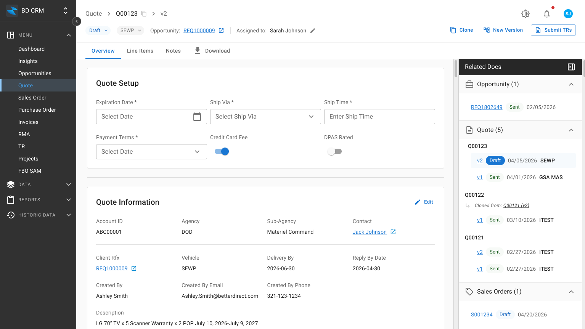
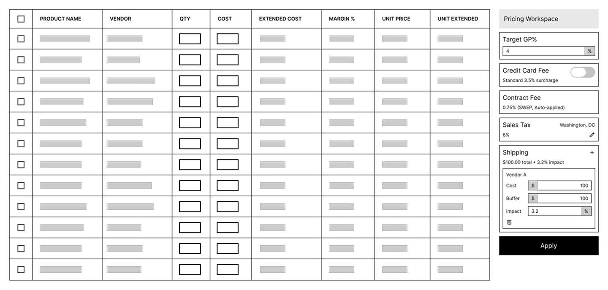
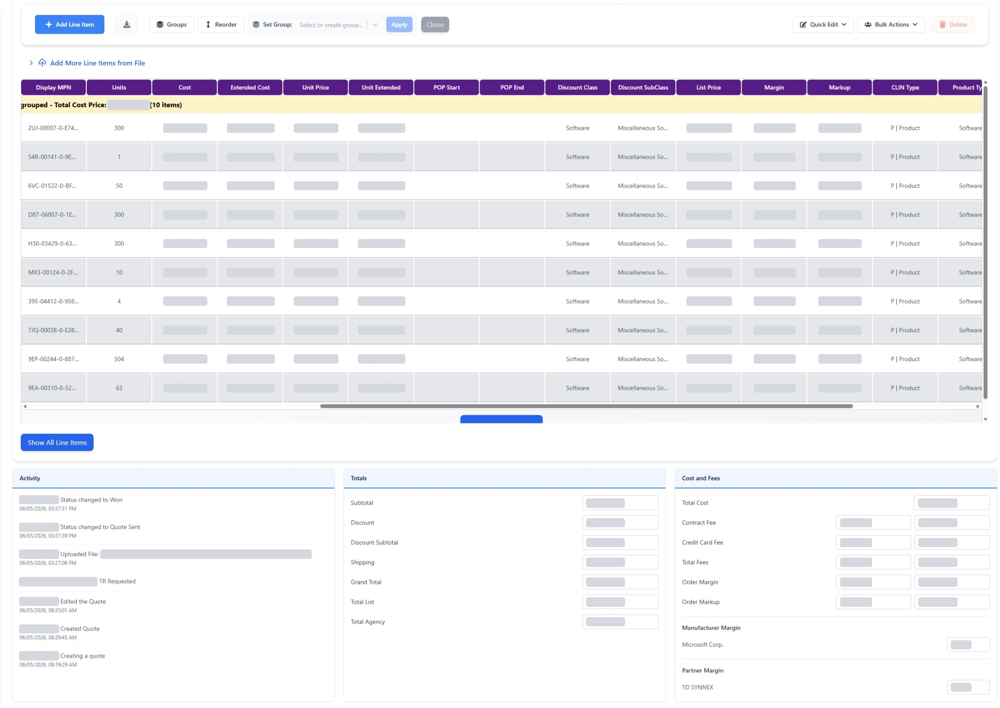
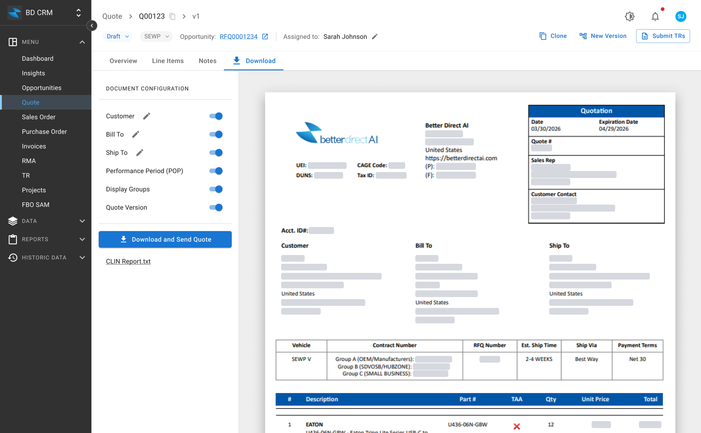
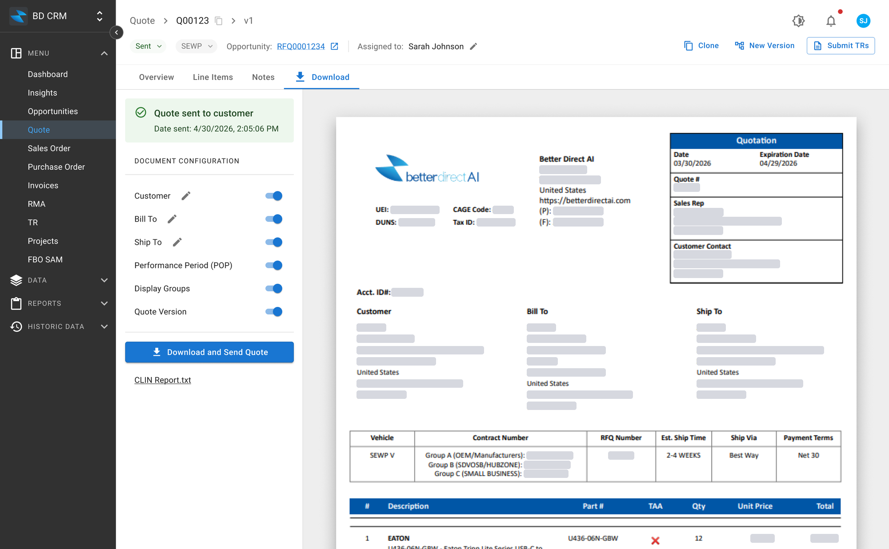
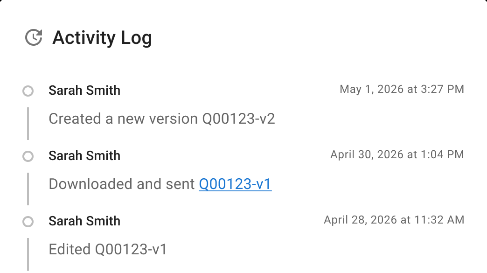
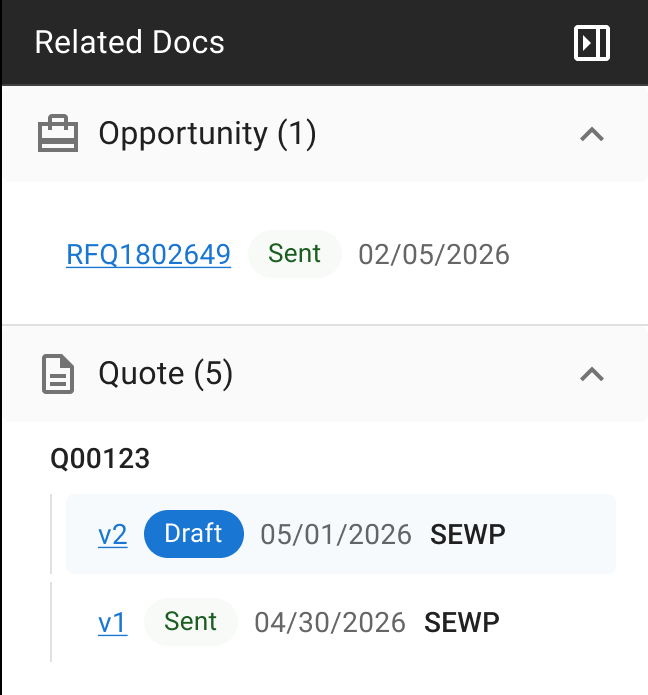

Overview
Salespeople at Better Direct, a government reseller, build complex customer quotes on the Quote Detail page. Its form-based design was built to edit a record, not to support the real work.
As the sole product designer, I redesigned the page as a quote-building workspace in 3.5 weeks, from research to handoff. It launched on June 28, 2026.
The challenge
At Better Direct, every sale starts with an opportunity, usually a government bid or request for quote. Salespeople read the customer's requirements and respond with a quote. Once the customer accepts it, the quote becomes the order that buyers, finance and fulfillment work from.
From opportunity to revenue
This project
Complex, customer-facing quotes were being built inside a record-editing form.
The sales team sends about 22,000 quotes a year: roughly 1,600 a month for most of the year, rising to about 2,400 a month during peak government buying season. A single salesperson's busiest days reach 30. Each quote is built from line items: one row for each product or service, with its own quantity, price, and configuration. Most quotes have fewer than 20 line items, but large requests can include 300 to 500.
22,000
quotes sent a year
30
quotes on a salesperson's busiest day
500
line items in the largest quotes
At that volume, the form's weaknesses became routine friction in salespeople’s daily work.
I was assigned to redesign this page so salespeople could build and send complex quotes with more speed and confidence.
What research revealed
I ran 5 interviews, observed sales training, and shadowed live quoting work. Participants ranged from new-hire to senior salespeople. Four themes appeared consistently.
1. The form overwhelmed salespeople with information and decisions
A single line item could need up to 56 fields, all with the same weight. Even experienced salespeople missed required fields and had to resubmit.
2. One workflow was broken into separate tasks
The steps of building a quote were spread across sections and windows, so salespeople kept switching context to finish one continuous task.
3. Pricing decisions happened outside the CRM
Salespeople calculated prices in external tools and entered only the final number in the CRM. Reviewers had no way to see how a price was calculated.
4. The CRM had no reliable record of sent quotes
Salespeople downloaded a quote, emailed it, and marked it as sent by hand. No visibility into which version drove a won bid, which led to reporting errors.
The turning point
My first hypothesis: an information architecture problem
Based on the research, the most obvious explanation was poor information architecture. The page showed too much at once, with limited hierarchy and unclear organization. My first design direction focused on regrouping related information, reducing visual clutter, and improving scannability.
Exploration 1
Structured quote detail
Exploration 2
Simplified overview
Exploration 3
Guided quote building
Better information architecture couldn't fix a fragmented workflow
These concepts made the page easier to navigate, but they didn't solve the core problem. Salespeople still moved between different parts of the page to finish a quote. The work was fragmented even when the layout was cleaner.
I stepped back to understand why reorganizing wasn't enough. The pattern became clear: salespeople used the same interface for five different activities.
Each activity needed different information and a different level of focus, but the interface gave them all the same static treatment. That changed how I understood the problem.
What I thought
A record to organize
- Group fields
- Improve hierarchy
- Reduce clutter
- Make it easier to scan
What I learned
A workspace to build
- Support the workflow
- Keep related tasks together
- Reduce context switching
- Design around the work, not the record
Instead of continuing to reorganize the form, I shifted the design toward a quote-building workspace that could support each stage of the workflow without losing critical financial and historical context.
How might we create a quote-building workspace that supports each stage of quoting without losing financial or historical context?
This reframing led to three design decisions.
Decision 1
Build the workspace around how salespeople build quotes
The quoting workflow became the structure of the page.
Once I understood Quote Detail as a quote-building workspace, I looked at how the five activities fit together. Data entry happens before the core work begins. From there, salespeople spend most of their time building and configuring line items, while solution grouping and pricing evaluation happen alongside that work. Review and delivery come later, once the document is ready.
How salespeople build a quote
This workflow gave me the structure for the redesigned page. Workflow tabs give each activity its own space, and salespeople move through them in the order they build a quote.
After
The same steps as tabs in the redesigned page
Each tab holds the activities numbered to match the steps above.
Start with the setup fields that matter
Quote setup happens on the Overview tab, the first stop before salespeople move to line items.
Out of 26+ setup fields in the old system, salespeople changed only 6 on every quote. More than 95% of quotes are converted from an opportunity, so the data in the other fields carries over. Those 6 fields affected margin and customer expectations, but they were scattered and hard to find. I brought them together in a compact Quote Setup section at the top of the draft view.
Before
One long form
The key fields, highlighted in blue, were spread from the top of the form to Billing & Shipping near the bottom.
After
Quote Setup at the top

The same fields sit together in one compact section, the first thing salespeople see.
Make line items the primary workspace
Salespeople spend most of their time building and configuring line items, so I made line items the center of the page. The supporting tasks stay within reach, and the table gets most of the space.
A high-density table with inline editing, sticky columns, and bulk actions makes line items easier to edit. Salespeople can configure and review large quotes without leaving the table.
Before
One section in a long form
Line items were one section of a long form, between quote details and totals.
After
Line items as the workspace
The table fills most of the page, with grouped line items visible together.
The pricing panel on the right keeps key financial information visible while salespeople work on line items.
Organize line items during import
Large imports used to arrive as long, flat lists, and salespeople grouped related items by hand afterward. Research showed that each uploaded file usually represented one set of product requirements.
So I moved first-pass grouping into the import flow: each file becomes a solution group by default. Salespeople can rename, reorganize, or refine the groups as the proposal develops. Structure becomes a result of the import, not a separate task.
Before
Organize after import
Select and group items by hand, once for every group.
After
Organize during import
Items arrive grouped from the import.
Less manual work, faster to value. Salespeople get to a structured quote sooner and spend their time refining solutions instead of grouping items one by one.
Adjusting groups afterwards is simpler too. Salespeople drag and drop line items directly in the table, which replaced a separate popup.
What testing confirmed
Participants understood the consolidated workflow and preferred doing all quote work in one place.
“I think I'll get a lot more done in a faster amount of time… I could just be in the same window.”
Import-based grouping was the most praised feature, because it removed the most time-consuming part of their current workflow.
“It just groups it for you… so we don't need to group them one by one.”
Testing also shaped scope. I had designed an expandable row to show all 56 fields without leaving the table, but none of the 6 participants used it. Everyone edited directly in the table. We shipped the table alone in Phase 1 and deprioritized the expandable row until there is clear demand.
Decision 2
Keep pricing visible while salespeople work
Surface the financial context salespeople need, and leave the pricing rules as they are.
A pricing calculator looked like the obvious solution
Pricing was one of the highest-risk parts of the quoting workflow. Salespeople had to balance a competitive selling price with profit, while accounting for product cost, fees, taxes, and vendor-specific adjustments. Much of that math happened outside the CRM. Salespeople worked out the margin on the side, using the formula taught in sales training, and then entered it:
Margin % = Target GP % + tax & fees %
The fees in that formula included credit-card charges (3.5%, if applicable), contract fees, tax, and shipping fee.
Research also showed that salespeople forgot fees. They priced a whole quote without thinking about tax, because nothing in the flow prompted it.
Because so much of the work happened outside the CRM, I first explored bringing the calculation into Quote Detail through a pricing calculator.
Early exploration, not shipped
A pricing calculator inside Quote Detail

1Set up tax and fees once
Contract fees and tax applied automatically; credit-card and shipping fees entered by hand.
2Enter a target GP %
One number for the whole quote, instead of working it out on the side.
3The CRM calculates the rest
Margin, markup, and unit price for every line item.
Testing showed the pricing model was more complex than expected
Sales training taught new salespeople to adjust one number, the margin. My calculator followed the same idea: salespeople would set a target GP %, and it would calculate margin, markup, and unit price for them.
Testing showed that salespeople priced in different ways. They moved between markup, margin, and unit price to fine-tune a quote, so a calculator with a single input didn't match how they worked.
Conversations with Buyers and Accounting showed the real scope. An accountant pointed out that markup and margin are mathematically different: markup divides by cost, and margin divides by selling price. The formula taught in training mixed up the two. Vendor protection, shipping, credit-card fees, taxes, and other adjustments each followed their own rules, and some only became known later in the workflow. The two teams also weighed these differently. Accounting needed vendor protection included to control risk, and salespeople often preferred a tighter price to stay competitive on a bid.
What actually goes into a quoted price
Taught in sales training, so salespeople expect to calculate itExpected by Accounting, often missed or calculated differently
Known at quote time
Common inputs in most quotes
Product cost
Base cost from the vendor
Shipping fees
Freight or delivery charges
Contract fees
Set by the contract
Credit-card fees
Easy to overlook; can erase profit
Conditional or vendor-specific
May or may not apply, by vendor or deal
Vendor protection
May be required by the vendor
Vendor-specific charges
For example, restocking or special handling
Later-known costs
Charges not yet known at quote time
Depends on accounting rules
Different calculation logic
Tax based on cost
For example, government customers
Tax based on selling price
For example, state tax for commercial customers
Quoted selling price
A simplified calculator would make pricing easier to use, while making the financial model underneath it less reliable. Getting pricing right would take a broader effort to translate Accounting's rules and real-world cases into a model salespeople could trust, and that didn't fit the time I had. Pricing had less than 1 week of the 3.5 week project.
Improve transparency without redefining pricing behavior
Instead of adding new pricing logic, I kept the existing pricing behavior and gave salespeople more financial context while they worked.
The redesigned workspace keeps cost, fees, margin, markup, and quote totals in a pricing panel beside the line-item table. Salespeople see the financial impact of each change without leaving the work, and can check whether their margin covers every fee before sending.
Before
Pricing split across three places

1Pricing columns, far right
Past the horizontal scroll on a wide table, away from the product details.
2Totals, below the table
Pushed further down with every line item added.
3Fees, in a separate panel
Split from the totals, so salespeople compared them by hand.
Checking one number meant scrolling between all three.
After
Pricing beside the line items
1Pricing always in view
Cost, fees, margin, markup, and totals stay beside the table while salespeople edit line items.
2Fees next to margin
Total fees sit right above order margin and markup, so salespeople can see at a glance whether the margin covers every fee.
I also used information collected earlier in the quote, like the shipping address, to surface location-based tax context sooner, instead of waiting until final review.
The larger pricing problem became separate follow-on work
The redesign improved pricing transparency without pretending to solve a pricing model that wasn't fully defined yet.
A complete pricing experience would need to support the full range of real-world pricing scenarios, follow Accounting's rules, and still be simple enough for salespeople to use without understanding the accounting model underneath. That became a separate product opportunity, rather than something forced into this redesign.
Decision 3
Turn quote delivery into a traceable customer handoff
Make the CRM the record of what the customer actually received.
The CRM lost track of the quote when it became customer-facing
In the existing workflow, creating a quote and sending it were separate actions. Salespeople configured the quote in the CRM, downloaded a PDF or Excel file, emailed it outside the system, and manually changed the status to Sent.
This created a gap between what the CRM knew and what the customer actually received. A salesperson could download one version, keep editing in the CRM, and send the earlier file. The activity log showed that someone had edited the quote, but not which version was sent, what changed, or why a new version existed.
Before
The quote left the CRM, and the record was lost
“…backtrack stuff and figure out why did we create a new version of this and where is a new version.”
The CRM lost its authority as the source of truth at the most consequential point in the workflow: when the quote became customer-facing.
Make the customer handoff explicit
The ideal solution was to send the quote directly from the CRM through Outlook, saving the delivered PDF and changing the status to Sent automatically. Email integration wasn't feasible for this release, so I designed an interim solution that works without it.
It has two parts. Salespeople first preview the finished quote inside the CRM, so they can check the customer-facing document before it leaves the system. When they download the quote, the download triggers the status change: the system saves that exact PDF, marks the quote Sent, and keeps the file as the customer-facing record. Quotes now go out as PDF only, so the saved file always matches what the customer received.
After
The handoff is recorded where it happens
Step 1: Preview and download
Preview and configure the PDF in the CRM

1Configure the document
Salespeople choose what the PDF shows, such as the performance period or customer info, and can edit customer and address details for this document. Both depend on what the customer asks for.
2Check the final document
Salespeople review the customer-facing PDF in a live preview, without downloading a file to check it.
3One action to send
Downloading the quote saves the PDF and marks the quote Sent in the same step.
Step 2: Once the quote is sent
The CRM shows exactly when the quote went out

4Sent, with a timestamp
The status updates automatically, and the banner records the date and time the quote was sent.
5Changes start a new version
The sent version is locked. New Version creates a v2 draft right away.
Testing showed salespeople strongly valued editing customer details in the preview. When one participant saw they could change a contact directly in the preview, they responded right away:
“I love this.”
What they valued was being able to change the customer-facing information “but not in the system.” Salespeople no longer had to go back to the quote and download another file just to correct customer-facing details. They could adjust, check the final document, and send it in one flow.
Keep the sent version on record
Quotes still change during negotiation, so a sent quote is locked. To change it, a salesperson clicks New Version, and the system creates a new draft under the same quote number.
The activity log and the Related Docs panel both show this history, so anyone can see what was sent and which version is current.
Each version stays visible after the quote is sent
Activity log

Related Docs

1New versions on record
Creating v2 is logged too, so the history shows when the quote moved on from the sent version.
2The sent document, linked
“Downloaded and sent” links to the saved PDF, the exact file the customer received.
3One quote number, two versions
v1 keeps its Sent status and date. The salesperson’s edits happen in v2.
“[Being able to] track it back to the original order… would be so helpful to us.”
Sales can now keep negotiating, and the CRM keeps a record of every version the customer received.
Approval before a new version, a reason for each change, and side-by-side comparison are designed and planned for a later release.
Impact
Peak government buying season, July 1 to September 29, 2026, compared with the same period in 2025. The redesign launched June 28, 2026.
87%
more quotes sent per salesperson than in the same season the year before.
6.8 → 6.2 days
average turnaround, while the number of opportunities handled more than doubled.
3 → 2 weeks
of onboarding for new salespeople. Sales managers reported new salespeople learned the quoting workflow a week faster.
+3.3 %
higher margin, an improvement that coincided with salespeople being able to evaluate pricing while building quotes.
These gains came during a strong season for the business overall, so the redesign is one of several contributing factors.
What's next to measure
- Rate of negative-gross-profit quotes sent, to test whether pricing transparency changes behavior
- Version and revision patterns, to see whether the new lifecycle is used as designed or worked around
- Disputes tied to quote history, the audit-trail test
Scope and what's next
The assignment was to redesign Quote Detail, not to rebuild the CRM or solve every sales-operations problem. In 3.5 weeks, I focused on the highest-risk parts of the workflow and documented broader opportunities as follow-on work.
The biggest open problem is pricing. Salespeople think in gross profit, but the system asks for margin percentages. That gap forces a mental conversion on every quote, and it's the root of the profit-leakage problem. Solving it needs a dedicated design effort, and that's where the next phase begins.
Reflection
I started by trying to simplify a page. Research showed the deeper challenge was aligning a CRM's data model with the work, and the accountability, of building a customer proposal.
Two lessons stayed with me:
- Research is a cross-functional communication tool, not just a design input. An accountant in testing, and conversations with Buyers and Accounting, showed the pricing problem was bigger than one page, and gave the team a shared reason to make it its own project.
- Knowing what not to build is part of the design work. Leaving out the pricing calculator was my hardest call. But shipping a tool built on an incomplete understanding would have been worse, and the work behind that decision became the clearest problem statement for the next phase.
This project changed how I approach enterprise design: workflow quality, financial judgment, and durable business records have to be designed as one system.